CSS3是CSS的第三代版本，新增了很多功能，例如：强大的选择器、盒模型、圆角、渐变、动画、2D/3D转换、文字特效等。
CSS3和HTML5没有任何关系！HTML5骨架中，可以用CSS2.1也可以用CSS3。XHTML骨架中可以用CSS3的样式。
在学习CSS之前都是学习选择器，在CSS2中有class、id、标签选择器等。
CSS3赋予了强大的选择器。
CSS3没有颠覆传统CSS的写法，依然是：
|
选择器{ k:v; k:v; } |
CSS有一个特点，遇见自己不认识的选择器、属性，会静默不报错。
)(*&^){
$%^&*():)*^%$;
}
div{
width: 100px;
fhjkdsahfkjasf:99834y912y492;
height: 100px;
!@#$%^&*:$%^&*();
background-color: orange;
}
属性选择器IE7开始兼容。
CSS3中[]可以选择任意属性，以下任意属性选择器将以自定义属性举例：
|
选择器 |
版本 |
说明 |
|
[data-info] |
CSS2 |
选中具有data-info属性的标签 |
|
[data-info=’val’] |
CSS2 |
选中具有data-info属性，值等于val的标签 |
|
[data-info^=’val’] |
CSS3 |
选中具有data-info属性，值以val开头的标签 |
|
[data-info$=’val’] |
CSS3 |
选中具有data-info属性，值以val结尾的标签 |
|
[data-info*=’val’] |
CSS3 |
选中具有data-info属性，值包含val的标签 |
|
[data-info|=en] |
CSS3 |
选择具有data-info属性，值以 "en-" 开头的元素 |
|
[data-info~=hello] |
CSS3 |
选择具有data-info属性，值包含单词 "hello" 的所有元素。 |
选择有data-info属性的div
|
div[data-info]{} |
选择有data-info属性，值是1的div，完全匹配：
|
div[data-info = "1"]{} |
选择有data-info属性，以h开头的div：
|
div[data-info ^= "h"]{} |
选择具有data-info属性，值包含单词 "haha" 的所有元素，空格隔开单词
|
div[data-info ~= "haha"]{} |
短横开头匹配，选择具有data-info属性，值以 "haha-" 开头的元素
|
div[data-info |= "haha"]{} |
选择有data-info属性，值包含“a”所有的元素
|
div[data-info*="a"]{background: skyblue;} |
还可以用[]继续进行多项匹配
|
[src="img/am.jpg"][alt="A梦"]{border-color:blue;} |
<div data-info="1"></div>
<div data-info="2"></div>
<div data-info="3"></div>
<div data-info="h1"></div>
<div data-info="h2"></div>
<div data-info="h3"></div>
<div data-info="a3"></div>
<div></div>
<div data-info="hahaxixi"></div>
<div></div>
<div data-info="haha"></div>
<div data-info="haha xixi"></div>
<div data-info="xixi haha memeda"></div>
<div data-info="haha-memeda"></div>
<div data-info="woaini haha-memeda"></div>
<div></div>
:first-child p:first-child 选择其父元素中的第一个子元素
:last-child p:last-child 选择其父元素中最后一个子元素
:first-of-type p:first-of-type 选择其父元素中的首个<p>元素
:last-of-type p:last-of-type 选择其父元素中的最后<p>元素
:only-of-type p:only-of-type 选择其父元素中唯一的 <p>元素
:only-child p:only-child 选择其父元素中的唯一子元素
:nth-child(n) p:nth-child(2) 选择其父元素中的第二个子元素
:nth-last-child(n) p:nth-last-child(2) 同上，从最后一个子元素开始倒着计数。
:nth-of-type(n) p:nth-of-type(2) 选择其父元素第二个 <p> 元素
:nth-last-of-type(n) p:nth-last-of-type(2) 同上，但是从最后一个子元素开始计数。
:not(selector) :not(p) 排除选择器，选择非 <p> 元素的元素。
<div>
<p></p>
<p></p>
<p></p>
<p></p>
</div>
<div>
<h3>h3</h3>
<p></p>
<p></p>
<div>
<p></p>
<p></p>
<p></p>
</div>
</div> :first-child() 只有这个IE7兼容，其他统统IE9开始兼容
注意：nth-child和nth-of-type的参数是一样的，用法也一样，只不过有小小的区别，nth-of-type能判断同类标签。
|
选择器 |
说明 |
|
li:nth-of-type(length) |
参数length是具体的数字，从1开始 |
|
li:nth-of-type(3n) |
倍数选择器，参数n从0开始计算，匹配第3、6、9...所有3的倍数 |
|
li:nth-of-type(3n+2) |
表示从第2个开始，隔2选1，匹配所有3的倍数 |
|
li:nth-of-type(even) |
选中所有的偶数 |
|
li:nth-of-type(odd) |
选中所有的奇数 |
CSS2.1中只能给标签增加：a:link、a:hover、a:visited、a:active
当一个表单元素有焦点，那么就能被:focus伪类选中
|
input:focus |
当一个标签是完全首尾相接，没有任何空格、tab、换行、文字等，就是:empty
<div></div>
<div> </div>
<div>
</div>
<div>我</div>
单选按钮、复选框、如果被勾选、就能被：checked选中。
|
input:checked{} |
|
<input type="radio" > <input type="radio" > <input type="checkbox" > <input type="checkbox" > |
选中启用或禁用的input元素，IE9开始兼容。
|
input:enabled{} input:disabled{} |
|
<input type="button" value="按钮1" disabled> |
:target选择器用于选择当前活动的目标元素。
p:target 选择当前活动的 p 元素。
<p><a href="#news1">跳转至内容 1</a></p>
<p><a href="#news2">跳转至内容 2</a></p>
<p id="news1"><b>内容 1...</b></p>
<p id="news2"><b>内容 2...</b></p>
注意：a:hover这些都叫伪类，伪元素就是伪标签，元素就是标签，所以就是假的标签。
:first-letter 选中某个元素中的文本首字母或第一个文字，IE9开始兼容
:first-line 选中某个元素中的第一行文字，IE9开始兼容
:before 选中某个元素内部的前面插入内容
:after 选中某个元素内部的后面插入内容
::selection 选择被用户选取的文本，IE9开始兼容，Firefox要用::-moz-selection替代
注意：before和after必须要写content:””属性，没有内容也必须写，而且生成的是行内元素。
|
1、下载相应的字体图标或字体库（字体文件） 2、用CSS3的@font-face属性将字体引入到当前页面，同时定义字体名称（默认名称为iconfont） 3、在CSS中选中当前元素使用font-family调用字体图标，同时给content属性添加编码（编码在iconfont.css文件中找） |
|
text-shadow:水平阴影 垂直阴影 模糊距离 阴影颜色; |
|
text-shadow:none; 取消阴影 |
|
text-shadow:-5px -5px 10px red,5px 5px 10px green,10px 10px 15px blue; |
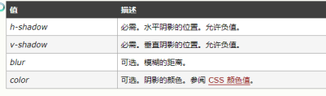
注意：前面两项必须写，后面两项可选，根据需要填写，阴影的颜色默认是文字颜色。
|
1、阴影可以有无数个，每个阴影直接用“逗号”隔开 2、阴影不占位置，类似于背景 |
|
box-shadow:水平阴影 垂直阴影 模糊距离 阴影大小 阴影颜色 内外/阴影; |
|
box-shadow:0px 0px 20px 30px red,20px 25px 20px 30px green; |
|
box-shadow:0px 0px 10px 30px red inset; 内阴影 |
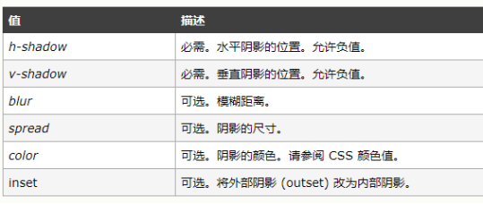
|
1、阴影可以有无数个，每个阴影直接用“逗号”隔开 2、阴影不占位置，类似于背景 3、将外阴影改成内阴影，使用inset |
|
border-radius:水平半径/垂直半径; 一般垂直半径可以省略，默认和水平半径一样。 |
|
border-radius:左上 右上 右下 左下; |
p{
width: 300px;
border: 1px solid red;
/*如何超出隐藏*/
white-space: nowrap;/*文本不允许换行*/
text-overflow: ellipsis;/*文本超出省略号*/
overflow: hidden;/*段落内容超出隐藏*/
}
<p>React和Vue的设计思想极其独特，属于革命性创新，性能出众，代码逻辑却非常简单,已成为 Web 开发的主流工具。</p>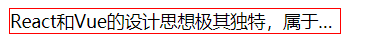
div{
width: 400px;
border: 1px solid red;
display: -webkit-box;
-webkit-box-orient: vertical;
-webkit-line-clamp: 4;/*第几行开始隐藏*/
overflow: hidden;
}
<div>绰号“考拉”，北京航空航天大学软件工程硕士，前端开发培训名师。讲课幽默、有激情，学生称他的课堂是“小德云社”，让学生在欢声笑语中把知识学会！考拉老师曾在国内某著名培训机构担任特级讲师、课程研发专员，在北京、上海、广州各地职教，学生众多，优秀学员遍布阿里、腾讯、百度、京东、360、美团等公司。考拉老师的免费教学视频流传也非常广，观看总人数超十万之多。 观看邵山欢老师免费视频>中国最早的web App、PhoneGap、Node.js研究者，为北航诸多创业企业制作移动端项目。想感受名师的魅力，快来爱前端学习吧！</div>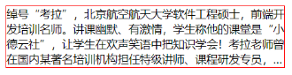
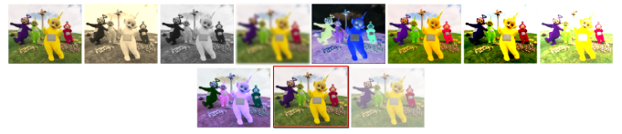
关于滤镜我们了解即可，不是必须需要记住的。
参考相关文章：https://blog.csdn.net/u010081689/article/details/48634509
在CSS3中，渐变分为：线性渐变和径向渐变
再也不需要切1px然后平铺背景做渐变了，IE9开始兼容
首先说一下，渐变属性是background-image属性，而不是background-color
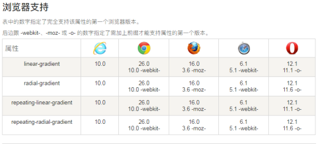
私有前缀：浏览器厂商把一些还处于实验性质的CSS属性，都加上了自己的前缀
|
-webkit- Chrome和Safari浏览器 -moz- Firefox浏览器 -ms- IE浏览器 -o- 欧朋浏览器 |
语法：
|
background:-webkit-linear-gradient(角度,颜色1,颜色2,颜色3) |
div:nth-of-type(2){
background:-webkit-linear-gradient(top,red,green,blue);
background:-moz-linear-gradient(top,red,green,blue);
background:-ms-linear-gradient(top,red,green,blue);
background:-o-linear-gradient(top,red,green,blue);
background:linear-gradient(top,red,green,blue);
}第一个参数，可以写deg为单位的度数，一圈是360deg
方向有分歧：
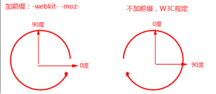
方向有：
|
left、right、top、bottom或角度（90deg），前面四个单词可以用to关键字指定方向，就不需要写前缀。 |
可以罗列多个颜色值，逗号隔开
|
background:linear-gradient(red 0%,green 30%,pink 50%,skyblue 80%,blue 100%); |
|
background:radial-gradient(red,green,blue); |
|
background:radial-gradient(方向,颜色1,颜色2); |
方向有：
|
left、right、top、bottom或center（默认），没有deg角度，也不能用to关键字，必须写前缀。 |
默认是圆的，可以设置椭圆，ellipse表示椭圆，必须指定宽高
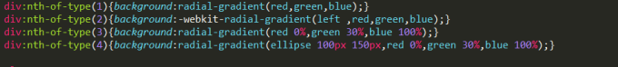
背景起源属性：
|
background-origin:content-box; |
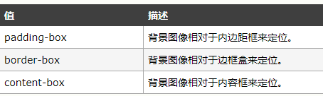
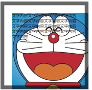
背景裁剪属性：
|
background-clip:content-box; |
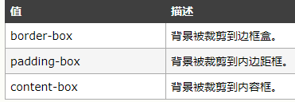
|
border-box：默认值，背景从border区域向外裁剪，超出部分将被裁剪 padding-box：背景从padding区域向外裁剪，超出padding部分将被裁剪 content-box：背景从content区域向外裁剪，超出内容部分将被裁剪 |
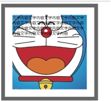
可以更改背景图的尺寸了，IE9开始兼容。
|
background-size:100px 200px; |
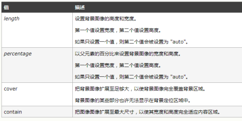
如果只想设置一个值，另外一个值自动按比例计算，那么就写auto：
|
background-size: 200px auto; |
|
background-size: auto 200px; |
backgrond-size可以用cover来当做值，表示图片不变形，尽可能多的呈递图片。根据图片的宽高比不同，和盒子的宽高比不同，有两种区别。cover可能不能完整呈递图片：
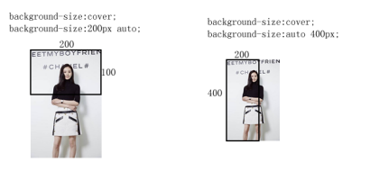
值也可以是contain，表示图片不会变形，一定能呈递完整图片：
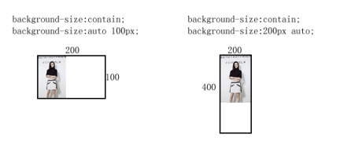
background-size用于精灵的时候，比较复杂，background-size是精灵图整体的尺寸。
一个盒子可以同时携带多个背景了，用逗号隔开。IE9兼容。
但是，同一个盒子只能携带一个背景色，可以携带多个背景图。
background: url(images/0.png) repeat-y,
url(images/shishi.jpg) no-repeat ,
url(images/0.jpg);按照顺序，前面没有占满的空间，就可以给后面的图片使用。
background-position、background-size等等属性都能用逗号隔开数值了，表示对不同的图片来设置值。
|
background-size: auto auto,600px 100px,auto auto; |
CSS3越来越多属性支持现代浏览器，可以使用CSS3替代JavaScript实现动画效果。
过渡：就是从一种状态慢慢的变化到另一种状态的过程。
比如：从黑到白，中间会有一个过渡的灰色。
transition属性，就是过渡，让某一个元素从CSS状态A变为CSS状态B的时候不是干嘣，而是有动画。
做动画，不需要setInterval，可以使用CSS3，transition属性使用的是浏览器内核中的C++代码实现的，效率比setInterval高的多，动画平滑程度、细腻程度都要高。
|
transition:属性名称 时间 运动方式 何时开始; |
|
transition:all 2s linear 1s; |
|
transition:width 1s,height 2s; 多个属性做过渡用逗号隔开。 |
第一个参数：就是想让什么CSS属性参与过渡，如果想让所有属性都参与，写all
第二个参数：就是过渡动画的时间，s表示秒，不能不写单位
第三个参数：缓冲关键字，ease表示不匀速，匀速是linear
第四个参数：延迟时间，0s表示不延迟
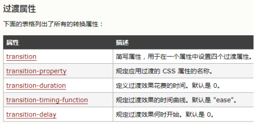
注意事项：
1、前面两项参数必须写，后面两项可选
2、谁要做过渡就给哪个选择器本身加，不建议给触发条件加，因为触发条件，离开的时候没有过渡效果。
3、如果要见人Chrome低版本浏览器或其他低版本浏览器，就要加前缀：比如：-webkit-transiton
基本所有属性都能过渡：
background-color、background-position、background-image、border-radius、border、padding、font-size等等。
不能过渡的：
渐变色、float
尤其要注意的是，jQuery中的animate函数，不支持background-color、background-position。所以，如果想要制作背景颜色、背景定位的动画，必须使用CSS3。
任何对元素的CSS改变都能触发过渡。
不要认为只有:hover能够触发过渡。任何造成元素的改变，都会引发过渡。
比如元素的类名改变，能够触发过渡。
比如直接用JS来设置属性，也能够触发过渡。
transition就像护身符一样，任何人胆敢改我的css样式，一定是动画实现的。并且动画效率比setInterval还高。
用过渡来实现动画，早晚有一天要替代setInterval()原理。
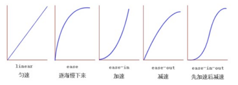
贝塞尔曲线生成：http://cubic-bezier.com
|
transition:all 2s cubic-bezier(0.1, 3.65, 0.74, -0.12); |
也可以从浏览器的CSS样式中调贝塞尔曲线参数：
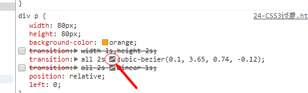